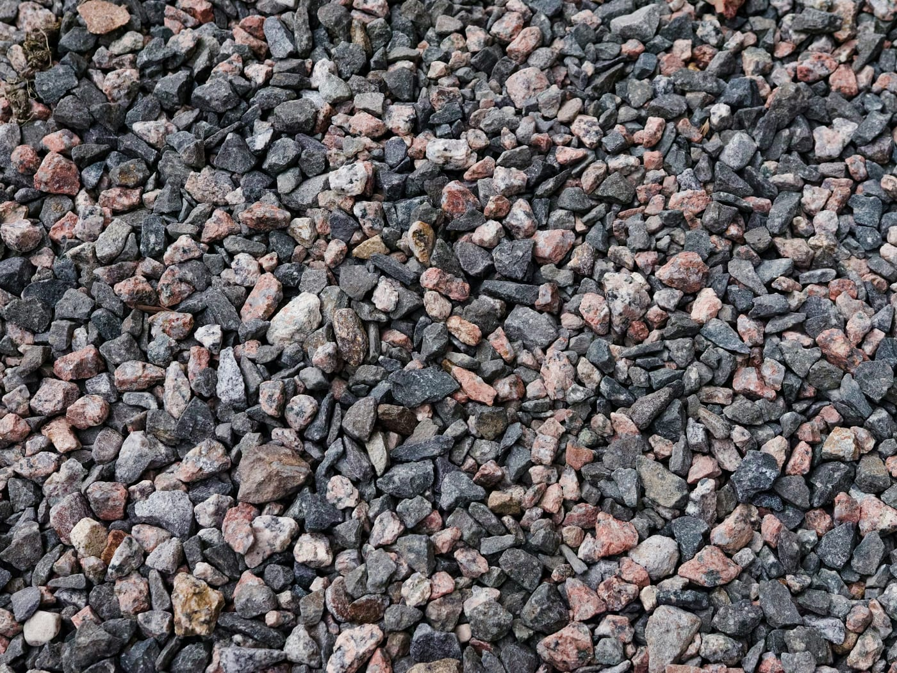
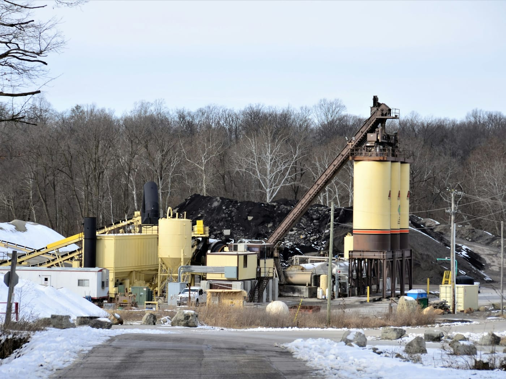
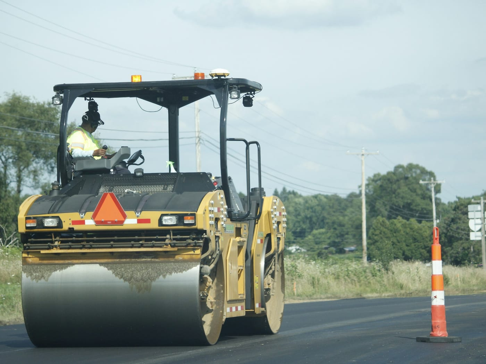

STEP 01
골재 준비
크기별 골재를 구분해 보관하고, 배합에 맞춰 공급합니다.
도로 포장에 쓰이는 아스팔트 콘크리트(아스콘)를 제조합니다.
굵은 골재·잔골재·채움재를 아스팔트 결합재와 함께 가열해 섞은 포장용 혼합물입니다. 흔히 ‘아스콘’이라 부릅니다.
쇄석 등 크기가 다른 돌 재료입니다. 포장의 뼈대를 이루며 하중을 지탱합니다.
골재를 서로 붙여 주는 역할을 합니다. 가열하면 묽어져 골재 표면을 감쌉니다.
골재 사이 빈틈을 메우는 고운 입자 재료로, 혼합물을 치밀하게 만듭니다.
아래는 아스콘 제조의 일반적인 흐름을 정리한 것입니다.

크기별 골재를 구분해 보관하고, 배합에 맞춰 공급합니다.

골재를 건조·가열하고, 정해진 비율의 아스팔트·채움재와 섞습니다.

적정 온도를 유지한 채 현장으로 운반해 포설하고 다집니다.
가장 윗층으로, 차량 하중과 마찰을 직접 받습니다.
표층에서 내려온 하중을 아래로 고르게 분산합니다.
아스팔트 포장의 가장 아래층으로, 하중을 지지합니다.
※ 일반적으로 아래층일수록 굵은 골재를 사용합니다.